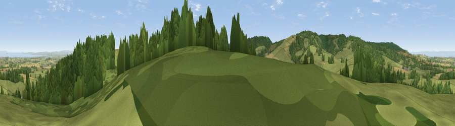

Viewpoint near Over Stowey
#3943 in England · top 14% of its area beats it · near Over Stowey · path 219 mWhere it is
The exact computed spot (ST 20450 35475). Click the marker for map links.
Public access: the nearest public right of way is about 219 m away — the final stretch may cross private land. Computed from Natural England's CRoW access layer and OpenStreetMap rights of way — not the legal definitive map. Always verify locally.
The view, rendered

A 360° render of this exact spot computed from the terrain model, tree cover and land cover — summer colours, afternoon light, calibrated against photographs of famous viewpoints. Real trees, hedges and buildings will differ in detail.
The panorama
Grey silhouette: terrain skyline in each direction (720 bearings, Earth curvature and refraction included). Dashed green: skyline with trees (+15 m) and buildings (+8 m) as obstacles. Blue strip: how far the ground is visible on each bearing.
Where the view opens
Wedge length = distance to the farthest visible ground on that bearing (vegetation-aware). Rings at 10, 25 and 50 km.
What fills the view
48% grassland · 37% woodland · 12% cropland · 2% water
Angular shares of the visible panorama (visual magnitude), not map area. Landscape diversity 0.47 (0–1 Shannon).
Key numbers
More beautiful places nearby
The staircase of upgrades: each row has a higher view potential than everything closer. Driving times are estimates from straight-line distance, calibrated against real road routing — check an actual route before setting out.
| Place | Direction | Drive | Score |
|---|---|---|---|
| Viewpoint near Enmore | ENE · 1 km | ~2 min | 77.6 |
| Viewpoint near West Bagborough | WSW · 3 km | ~7 min | 84.3 |
| Wills Neck | W · 4 km | ~9 min | 85.7 |
| Viewpoint near Holford | NW · 8 km | ~16 min | 85.9 |
| Viewpoint near West Quantoxhead | NW · 10 km | ~19 min | 87.8 |
| Viewpoint near West Quantoxhead | NW · 11 km | ~20 min | 88.7 |
| The Knoll | SE · 58 km | ~80 min | 91.0 |
51.11302, -3.13781 · source: screening · position refined by local search. Computed location — check access rights before visiting.